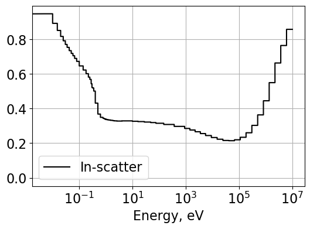
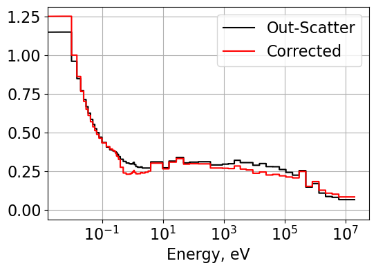

Diffusion Coefficients and Critical Spectrum Search
Introduction
Different methods are available to calculate transport cross sections and transport correction ratios. The selected method is often dependent on practically available information necessary for calculating the tranport cross sections. Some common methods used in calcuting transport cross sections include in-scatter, out-scatter, and flux-limited approaches. The in-scatter approach relies on the current weighted first moment of the scattering matrix. In multigroup form, the in-scatter transport cross section is calculated as
It is not always practical to perform current tallying which results in the in-scatter method not always being viable. The out-scatter approach alleviates the need for current tallying by assuming that out-scatter from group g to g’ is approximately equal to in-scatter from group g’ to g. With this assumption, the transport cross section calculation is simplified to
Finally, the flux-limited approach removes the necessity of considering current weighting and instead uses flux weighting of the first moment of the scattering matrix. The transport cross section is then found by
After calculating transport cross sections for a given homogenized lattice, fine group diffusion coefficents can be calculated and then condensed to 2-groups by
The out-scatter method tends to underpredict transport cross sections due to anisotropic scattering largely attributed to hydrogen. This is particularly pronounced at high energies. The out-scatter method undergoes hydrogen correction to improve tranport cross sections.
The transport cross section calculation enables the performance of a critical spectrum search for the lattice under consideration. The following “steps” are performed for the critical spectrum calculation:
The assembly is modeled with reflective boundary conditions.
The neutron leakage (controlled with buckling term) is adjusted to achieve \(k_{eff}=1\).
Possible methods used to calculate the critical spectrum include the B1 method, P1 method, and the CASMO-4E method (CM). For B1 and P1 methods, the following equations are used:
P1 flux is calculated by forcing \(a_g(B)=1\). The CM flux calculation uses the fundamental mode equation. A key difference between methods is the CM method assumes known diffusion coefficients and does not calculate the diffusion coefficients from matrix inversion. The method calculates flux by solving
with the fine group diffusion coefficients calculated as \(\frac{1}{3\Sigma_{tr,g}^{CMM}}\) and a value for \(B^{2}\) assumed.
The Jupyter Notebooks containing work completed for diffusion coefficient condensation, hydrogen correction, and critical spectrum calculations are provided below:
Methodology
Two python files, numerical_TCR.py and critical_spectrum.py, are developed to perform post-processing of data provided by Serpent. All data from Serpent files is read using serpentTools. The result files are built for the following fuel assembly.
{kind=link}
The above geometry represents fuel pins (red) with guide tubes (grey) and a water moderator. The hydrogen correction is performed with a Serpent results file created for an infinite hydrogen medium.
Diffusion Coefficient Calculations
Separate functions are developed for calculating in-scatter (InScatter), out-scatter (OutScatter), and flux-limited (FluxLimited) transport cross sections. The methodology for performing hydrogen correction of the out-scatter method is provided in the Jupyter Notebook: Fuel Assembly Diffusion.
In general, the functions take arguments of ng, sigS1, sigT, flx, and B2 each representing the number of energy groups, the 1st moment scattering matrix, the total macroscopic cross section array, the flux array, and the buckling.
Group condensation is performed using the function Condense2gr.
Critical Spectrum Search
The critical spectrum search is performed by perturbing the buckling, calculating the flux spectrum, updating the multiplication factor, and then iterating on the buckling again until the multiplication factor reaches critical conditions (within some \(\epsilon\)).
Flux spectrums are generated using the functions SolveB1 and SolveCM. A separate function, CriticalSpectrum, performs the critical spectrum search for the specified method. To calculate P1 critical flux spectrum, the \(a_g(B)\) term is set to 1.
Results
In-Scatter, Out-Scatter, and Flux-Limited Group Constants
The CMM diffusion coefficients, calculated from “fa2D_2gr_B1_res.m” results file, are taken as the reference value. All other diffusion coefficients are calculated from transport cross sections derived from “fa2D_70gr_inf_res.m” and then condensed into 2-groups. Across all fast group diffusion coefficients, the flux limited approach had the largest deviation from CMM values. For thermal diffusion coefficients, the largest deviation was found using the out-scatter method, indicating possible inaccuracies at thermal energies. The hydrogen corrected out-scatter method produced balanced results for both fast and thermal groups. The out-scatter method performed better than expected in the fast group considering out-scatter methods tend to underpredict transport cross sections at high energies.
 {kind=link}
{kind=link}
{kind=link}
Critical Spectrum Search
Each spectrum is calculated using a critical spectrum search while iterating on the buckling term. The multiplication factor tolerance is set at 1E-08. The critical spectrums are achieved after 4 iterations for B1, 3 iterations for P1, and 3 iterations for CM. Using the critical flux spectrums from each method, 2-group constants are generated and compared against the B1 results from Serpent. The results are summarized in the table and figure below.

{kind=link}
The critical flux spectrums are all in good agreement for each of the calculation methods. For the 2-group constants, the B1 method produces highly consistent diffusion coefficients and reduced absorption cross sections. The P1 method slightly overestimates the diffusion coefficients in both groups but shares a similar buckling value to the B1 calculation. The CM method produces the highest estimates of diffusion coefficients but tracks well for other group constants. The CM method calculates fine group diffusion coefficients with the CMM transport cross sections from Serpent which is likely why the 2-group diffusion coefficients deviate from the other methods.
Conclusions
The calculated diffusion coefficients represent ways in which the transport cross section can be calculated, both with and without the current. This flexibility alleviates the necessity to tally current but comes with some error. However, after hydrogen correction, each method presents minimal error for 2-group diffusion coefficents. The critical spectrum calculation method also demonstrates good agreement across methods but shows a trend where group 1 diffusion coefficients are larger for CM methods.
Return to the top of the page: Diffusion Coefficients and Critical Spectrum Search